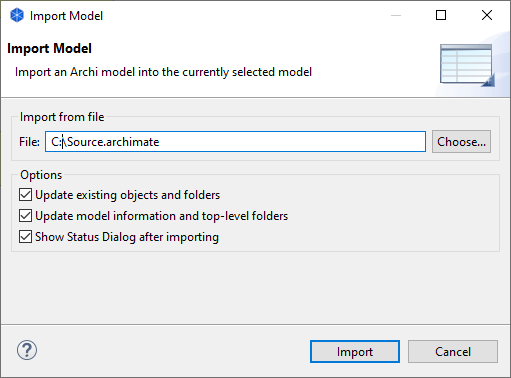

It is possible to import and merge another Archi model into the currently selected model. You can then maintain the imported model as a reference model that you can update separately and re-import as required.
Some things to consider when importing another model:
To import another Archi model into the currently selected model select "Import an Archi model into the currently selected model" from the main "File" menu. The following dialog will appear:
Importing another model
Update existing objects and folders
If this is selected then any existing target objects and folders will be updated when importing.
Update model information and top-level folders
If this is selected then if there are any changes to the model node (Name, Documentation, Properties) these will be updated. If there are changes to any top-level folders (Documentation, Properties) these will also be updated.
Show Status Dialog after importing
If this is selected then a status dialog is shown after importing a model. This will list what was updated or changed.